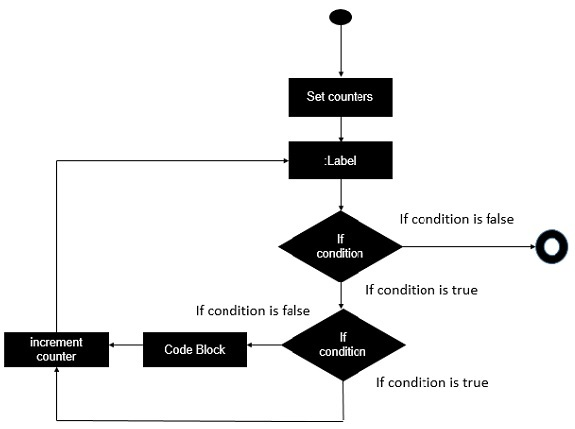

- Batch Script Tutorial
- Batch Script - Home
- Batch Script - Overview
- Batch Script - Environment
- Batch Script - Commands
- Batch Script - Files
- Batch Script - Syntax
- Batch Script - Variables
- Batch Script - Comments
- Batch Script - Strings
- Batch Script - Arrays
- Batch Script - Decision Making
- Batch Script - Operators
- Batch Script - DATE & TIME
- Batch Script - Input / Output
- Batch Script - Return Code
- Batch Script - Functions
- Batch Script - Process
- Batch Script - Aliases
- Batch Script - Devices
- Batch Script - Registry
- Batch Script - Network
- Batch Script - Printing
- Batch Script - Debugging
- Batch Script - Logging
- Batch Script Resources
- Batch Script - Quick Guide
Break Statement Implementation
The break statement is used to alter the flow of control inside loops within any programming language. The break statement is normally used in looping constructs and is used to cause immediate termination of the innermost enclosing loop.
The Batch Script language does not have a direct ‘for’ statement which does a break but this can be implemented by using labels. The following diagram shows the diagrammatic explanation of the break statement implementation in Batch Script.
The key thing to note about the above implementation is the involvement of two ‘if’ conditions. The second ‘if’ condition is used to control when the break is implemented. If the second ‘if’ condition is evaluated to be true, then the code block is not executed and the counter is directly implemented.
Following is an example of how to carry out the implementation of the break statement.
Example
@echo off
SET /A "index=1"
SET /A "count=5"
:while
if %index% leq %count% (
if %index%==2 goto :Increment
echo The value of index is %index%
:Increment
SET /A "index=index + 1"
goto :while
)
The key thing to note about the above program is the addition of a label called :Increment. When the value of index reaches 2, we want to skip the statement which echoes its value to the command prompt and directly just increment the value of index.
Output
The above command produces the following output.
The value of index is 1 The value of index is 3 The value of index is 4 The value of index is 5